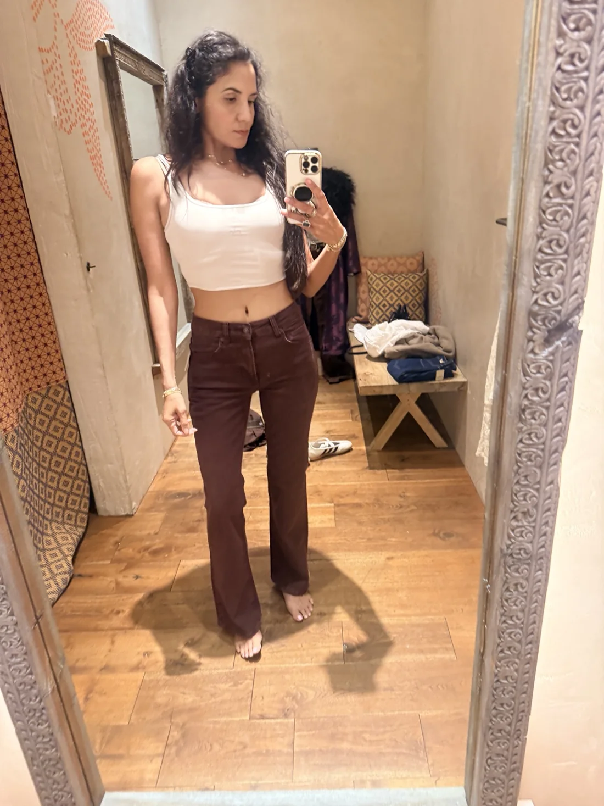
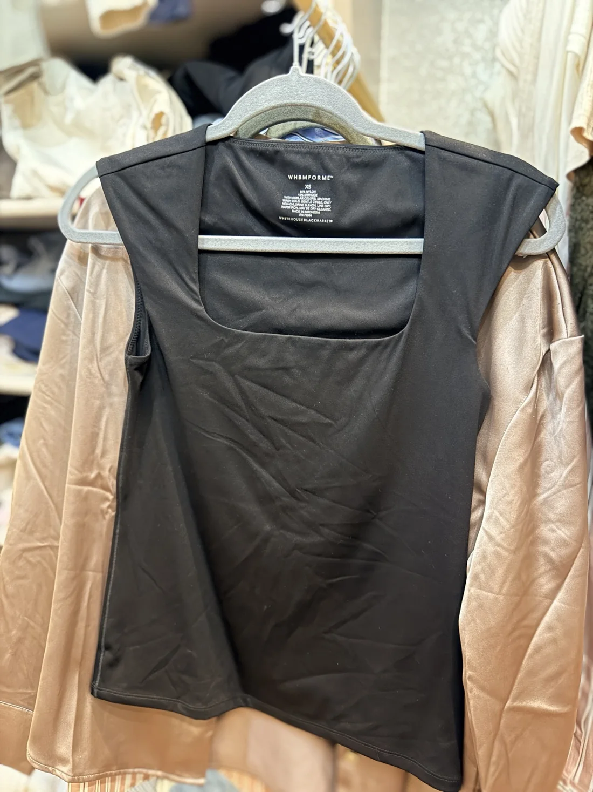
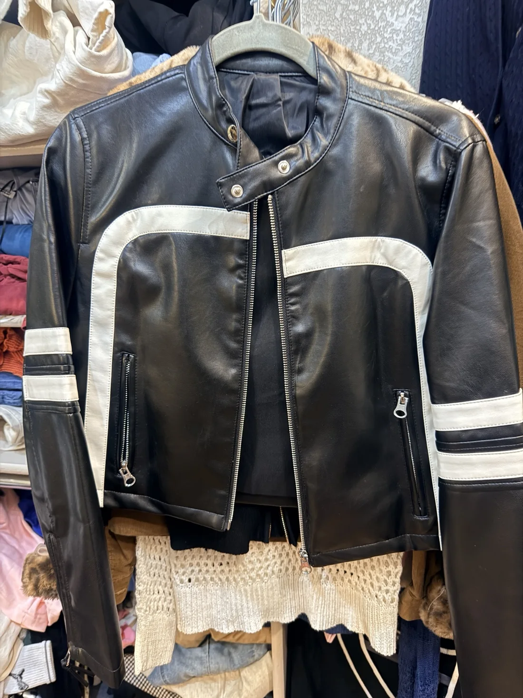
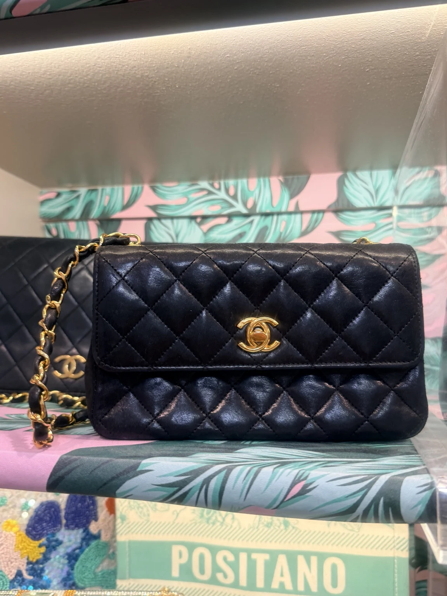
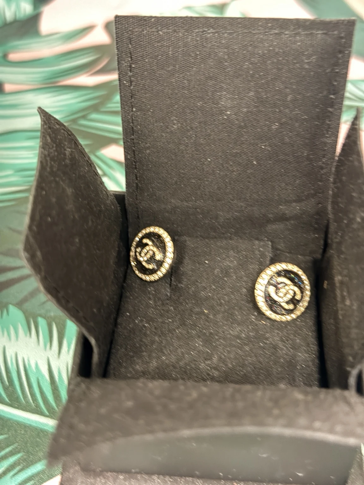

Burgundy flared jeans
Black square-neck sleeveless top
Black-and-white racing jacket
Black quilted CC turn-lock flap bag
Black-and-gold round CC earrings01 · SEMA filming
Burgundy flares + black square-neck top + racing jacket. Black Chanel flap and CC earrings. Wear the jacket open; remove it for a second camera look. Your photographed black cross-strap flats are the starting shoe option—only if comfortable for a full day.